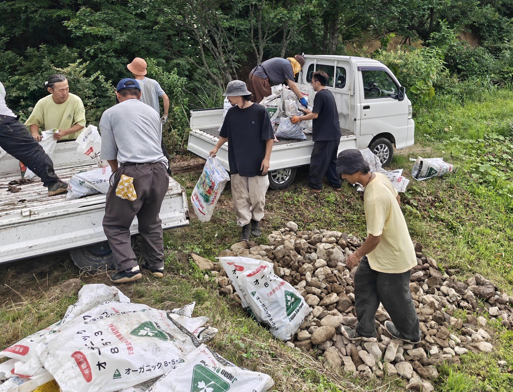
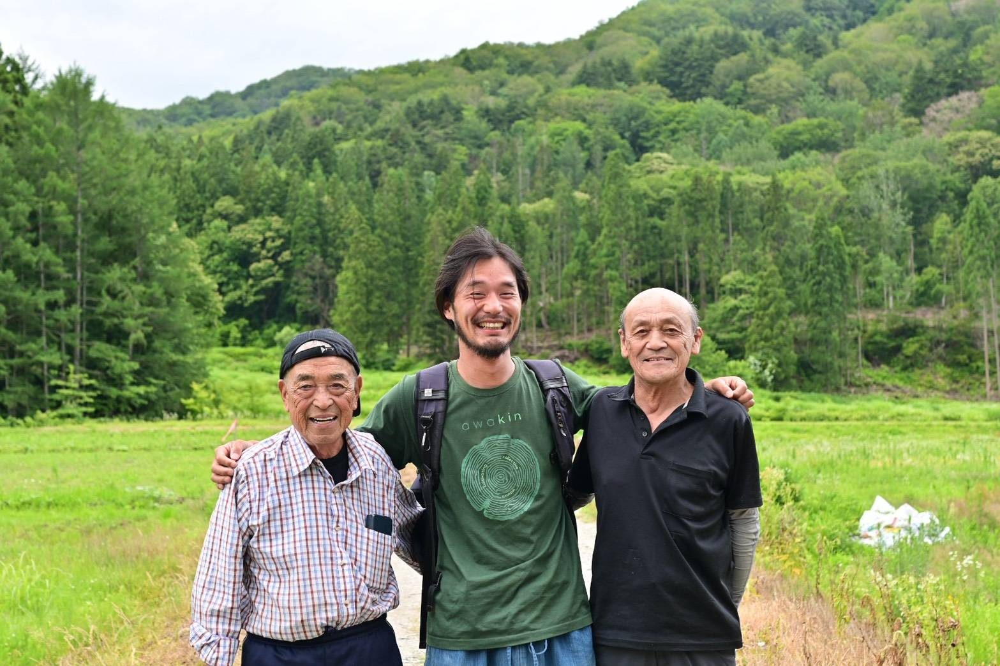

SHINDOの起ち上げメンバー、活動基盤となる自然農法無の会、現場を支える技術者さん、全国から集まるパートナーさん、昭和村にて共に活動をしている村の住民の方々をご紹介します。
学者を志したのち、より本質に近い生業を求めて自然農法の道へ。全国30件以上の農家を巡り、2021年に会津へ移住。SHINDOの発起人です。
詳しく読む →大学四回生の冬に会津へ。教育と環境整備を担い、都市の学生と田舎の農業をつなぐ橋渡し役です。
詳しく読む →三年前、都内の企業を辞めて会津へ。土と時代の両方を見つめ、新たな時代の食糧生産を探求しています。
詳しく読む →創業21年。福島県内で最大規模の有機JAS農家であり、SHINDOの実践知の源です。発起人の宇野も、上野も大島も、ここで農業を始めるところからスタートしました。
自然農法 無の会・SHINDOのメンバー ／ 拠点「理空」にて
2025年に札幌から移住。無の会の野菜栽培を担う。
農業生活12年目。苗づくりの安定と面積拡大を実現。
自動車ディーラーから転身。不耕起栽培と機械開発を担当。
野菜づくり歴12年。不耕起栽培の実験を続けている。
豪雪の中山間地で暮らしと事業を成り立たせているのは、地元の技術です。
全国から35組を超えるパートナーが関わっています。

ショートムービーの製作。茂木さんは2026年より会津に移住。
Webとポッドキャストによる発信支援。現場作業にも。
SNS発信の戦略設計と更新。
年に数回、10名前後で援農に。
会社ぐるみでの現場参画。2026年春は65名が集結。
全国の自然農法・有機農家、医師、発明家、中小事業者の皆さん。
すでにある暮らし・水・土地・人足の続きにある未来を、集落を支えてきた村民の方々と協力して作っていきます。

小野川の住民の方々と ／ 昭和村・小野川
この続きを、一緒に歩く人を探しています。
3つの関わり方を見る会津・奥会津に築く、生命の基盤。
新しい豊かさへとつづく道。
連絡先：official@zen-bu.co ／ 発行：株式会社ZEN-BU